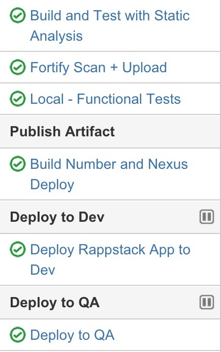
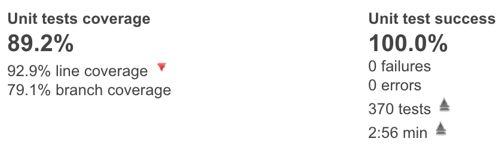
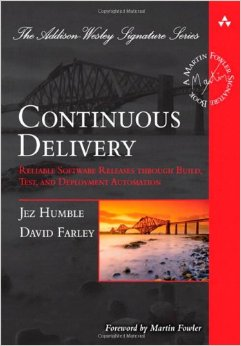

A Really Quick Primer on Continuous Delivery
No, I mean *really* quick
Baltimore Innovation Week 2014 Dev Day Lightning Talk
Erik Hummel, Engineering Manager @ PayPal
Some Background
What exactly is Continuous Delivery?
Some Background
What exactly is Continuous Delivery?
... so then Continuous Integration??
Some Background
What exactly is Continuous Delivery?
... so then Continuous Integration??
... Fine, but WTF is Continuous Deployment?!?

Why Should You Care?
How is PayPal Credit doing?
Wrapping up
Wrapping up